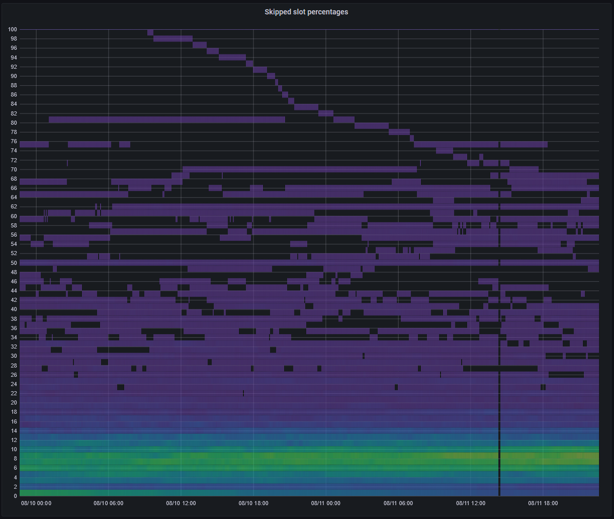
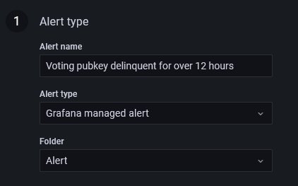
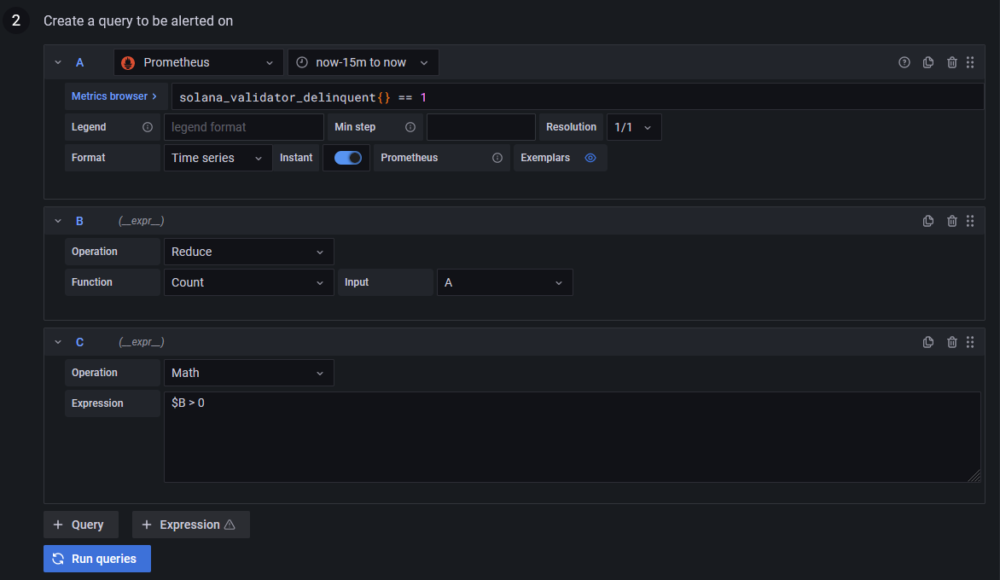

Introduction
solana-exporter (Solana Rust Exporter) is an advanced, modular monitoring solution for
Solana validator nodes. The executable part is implemented
in Rust and was initially based on the Golang
original by CertusOne but now provides additional
functionality. It comprises
-
a Prometheus exporter executable written in Rust,
-
a Docker container suitable for
docker-compose, -
sample Grafana dashboards.
Typical uses include
-
monitoring Solana validator nodes by the nodes' operator,
-
managing a stake pool,
-
monitoring the cluster health.
This guide explains how to set the monitoring stack up and how to stay on top of things using Grafana alerts.
Basics
This chapter covers the setup, configuration and installation of solana-exporter, as well as integration with
other tools.
Installation
To install the latest version of solana-exporter, run:
cargo install solana-exporter
Note that the libraries libssl and libudev should be installed on the target machine as well. Refer to your
distro's package manager and documentation for guidance on how to install them.
After installation, run
solana-exporter generate
to set up a default configuration file. By default, the generate command will place a config file inside
~/.solana-exporter; this directory will be automatically created, unless the -o flag is present to override
the output location.
Running as a service
Run this as a systemd service by a non-root user with a script like this one:
[Unit]
Description=Solana Exporter
After=solana.service
Requires=solana.service
[Service]
User=solana
Restart=always
RestartSec=20
ExecStart=/home/solana/.cargo/bin/solana-exporter
[Install]
WantedBy=multi-user.target
Running as a Docker container
solana-exporter is also available as a container which can be pulled by
docker pull rustiq/solana-exporter:0.4.1
Then run it with
docker run -d \
-v /path/to/your/config.toml:/etc/solana-exporter/config.toml \
-v solana-exporter-data:/exporter rustiq/solana-exporter:0.4.1
We recommend that the config.toml file be bind-mounted to the container, so you have easy access to it on the host
machine. However, the persistent database should be stored in a named volume.
Configuration
After running solana-exporter generate, a template config file will be created in either the specified location or the
default directory (~/.solana-exporter). This page explains the individual variables and how they affect the exporter.
Sample configuration
rpc = 'http://localhost:8899'
target = '0.0.0.0:9179'
vote_account_whitelist = []
staking_account_whitelist = []
[maxmind]
username = 'username'
password = 'password'
rpc- the location of the JSON-RPC node. This can be a local RPC node, or a public one.- Remark: Public nodes usually have a rate-limiting policy in place that makes usage with
solana-exporterdifficult (e.g., delayed response times).
- Remark: Public nodes usually have a rate-limiting policy in place that makes usage with
target- the target address/port to export Prometheus gauges to.vote_account_whitelist- an array that instructs the exporter to only export statistics related to the specified vote pubkeys, and their corresponding node pubkeys if found.staking_account_whitelist- an array that instructs the exporter to only export APY statistics related to the specified staking pubkeys.[maxmind]- The exporter can optionally use MaxMind's GeoIP2 Precision City Service to export decentralisation-related metrics. However, this requires you to sign up for a MaxMind account and regularly top-up your account with credits.username- the username of the API key.password- the password of the API key.
Important note on vote_account_whitelist and staking_account_whitelist
As explained above, whitelists can be used to restrict the amount APY statistics exported. However, care should be taken
if you modify the whitelists and then reload solana-exporter. In particular, for the following gauges:
solana_current_staking_apysolana_average_staking_apy
if any newly-appearing (e.g., formerly excluded) pubkeys were not fetched for a particular epoch, then solana-exporter
will not attempt to "back-fill" data for either the current or past epochs. Therefore, those pubkeys will be missing
from the gauges until the next epoch begins. This is due to the fact that the exporter only scrapes the ledger for
rewards data once at the beginning of every epoch.
To force a re-fresh of the current epoch's rewards, delete the database.
Overriding the config file location
- Standalone program: The default location is
~/.solana-exporter/config.toml. Override this with the-cflag. - Docker container: Change the bind-mount location.
Overriding the database location
To speed up processing and reduce unnecessary network traffic, solana-exporter uses a persistent database to cache
some requests.
- Standalone program: The default location is
~/.solana-exporter/persistent.db. Override this with the-dflag. - Docker container: The location cannot be overridden; the exporter expects a database to be mounted in
/exporter/.
Setting up Prometheus
solana-exporter uses Prometheus to export, monitor and aggregate data for use in other utilities. Refer to
Prometheus' documentation on how to get it running on your machine.
If querying a public RPC port, solana-exporter can be run from anywhere, not necessarily from the
validator machine.
If querying a private RPC port, install Prometheus on the validator machine. Add
the following snippet to the scrape_configs section of the prometheus.yml config file:
- job_name: solana
static_configs:
- targets: ['localhost:9179']
Restart Prometheus. Now the solana-exporter metrics should be available to view at
http://localhost:9179/metrics. If running on the validator machine, it is highly advisable to only
open the Prometheus datasource port to the Grafana machine. This can be achieved with nftables. Here is
an example /etc/nftables.conf:
#!/usr/sbin/nft -f
flush ruleset
table inet filter {
chain input {
type filter hook input priority 0;
# allow connection to Prometheus datasource only locally and from Grafana
ip saddr { 127.0.0.1, <Grafana IP> } tcp dport 9090 accept
tcp dport 9090 drop
# allow connection to Prometheus exporter endpoints only internally
ip saddr != 127.0.0.1 tcp dport 9100 drop
ip saddr != 127.0.0.1 tcp dport 9179 drop
}
chain forward {
type filter hook forward priority 0;
}
chain output {
type filter hook output priority 0;
}
}
Note the order of commands. An accept clause should appear before the corresponding drop clause.
When solana-exporter is used on a mainnet validator node, Grafana must always run on a different
machine to circumvent potential DDoS attacks on the validator. In the Grafana dashboard, add the
Prometheus data source http://<Validator IP>:9090. Then import the rustiq.json using that data source.
Setting up Grafana
After solana-exporter exports gauges and metrics to Prometheus, it may be useful to visualise these metrics.
Grafana allows you to create custom dashboards using Prometheus as a data source.
The repository includes a basic dashboard (rustiq.json) that shows off a range of gauges that solana-exporter
can export using graphs. Some included visualisations include the monitoring of basic cluster statistics such as
transactions per second, skipped slots percentage. Decentralisation metrics such as the distribution of staked SOL
across datacenters can also be tracked (MaxMind account required).
To use the provided dashboard, first add the Prometheus data source. Then, import the dashboard.

For an in-depth explanation of each exported gauge, see then next chapter.
Sample screenshots
 Pie chart of activated stake by datacenter
(Gauge used:
Pie chart of activated stake by datacenter
(Gauge used: solana_active_validators_dc_stake)

Heatmap of average skipped slot of validators
(Gauge used: solana_skipped_slot_percent)
 Heatmap of average staking APY over 5 epochs
(Gauge used:
Heatmap of average staking APY over 5 epochs
(Gauge used: solana_average_staking_apy)
Exported feeds
This chapter explains in detail all the feeds that solana-exporter exports to Prometheus.
solana_active_validators
Description
Total number of validators in the cluster, grouped by the current status (either current or delinquent).
Sample output
solana_active_validators{status="current"} 838
solana_active_validators{status="delinquent"} 61
solana_validator_delinquent
Description
Whether a validator is delinquent. Given a vote pubkey label, the value (0 = false, 1 = true)
shows whether the validator with that vote pubkey is delinquent.
Sample output
solana_validator_delinquent{pubkey="13DmkMhdpmJJu7nU2ozAyPiKuopZbYShMHV3JAA7YVYC"} 1
solana_validator_delinquent{pubkey="13HNYUVBVHgJSfNKvgXgKia3bywzXabGzQjFyMQxLMjS"} 0
solana_validator_delinquent{pubkey="13zyX9jfGy1RvM28LcdqfLwR4VSowXx6whAL6AcFERCk"} 0
solana_validator_delinquent{pubkey="14YCghb1uYPreALx6arirtPAnoGghoPH2Ac6gCmNQdq7"} 0
solana_validator_delinquent{pubkey="1gqv7KGm888nQXsJoNFwGaDkNERUBztuekjzK3J3T7a"} 0
solana_validator_delinquent{pubkey="21ryEourynXqhpLe1DsFz8yoeFKSXE14T8bKBFmzcYzt"} 1
Example usage
count(solana_validator_delinquent == 0) will return a time series of all active validators.
count(solana_validator_delinquent == 1) returns a time series of all delinquent validators.
These two queries are equivalent to solana_active_validators.
solana_validator_activated_stake
Description
The activated stake of a validator vote account pubkey, in lamports.
Sample output
solana_validator_activated_stake{pubkey="2BGBakG9kjmZAaygVmAuUrBSqBZt8p5FVabbStxHEXUj"} 189767375985727
solana_validator_activated_stake{pubkey="2BJUTarkNTNtiqn6g7mfZc5fjaF3sSnvV73dnuwuZnxV"} 182505753341154
solana_validator_activated_stake{pubkey="2DZVYFkMVumN7wuTSjDCAqWmpu9ydE7UoeYSJVWhNVEQ"} 26246477171200
solana_validator_activated_stake{pubkey="2Dwg3x37yN4q8SyrrwDaRPGQTp14atcwMPewe3Y8FDoL"} 181695250479495
solana_validator_activated_stake{pubkey="2EoaPgNSGbB3JyP7nSfiK5Wq3eME3LgbbEbdPim4CnVm"} 0
solana_validator_activated_stake{pubkey="2PC2DCk8C7n4jhXA427a1qL9CFRu7PtrzKHixU6LXocN"} 184130856467877
solana_validator_last_vote
Description
The last voted slot of a validator vote account pubkey.
Sample output
solana_validator_last_vote{pubkey="13DmkMhdpmJJu7nU2ozAyPiKuopZbYShMHV3JAA7YVYC"} 91417048
solana_validator_last_vote{pubkey="13HNYUVBVHgJSfNKvgXgKia3bywzXabGzQjFyMQxLMjS"} 91431043
solana_validator_last_vote{pubkey="13zyX9jfGy1RvM28LcdqfLwR4VSowXx6whAL6AcFERCk"} 91430967
solana_validator_last_vote{pubkey="14YCghb1uYPreALx6arirtPAnoGghoPH2Ac6gCmNQdq7"} 91431043
solana_validator_last_vote{pubkey="1gqv7KGm888nQXsJoNFwGaDkNERUBztuekjzK3J3T7a"} 91431042
solana_validator_last_vote{pubkey="21ryEourynXqhpLe1DsFz8yoeFKSXE14T8bKBFmzcYzt"} 7393690
solana_validator_root_slot
Description
The root slot of a validator vote account pubkey.
Sample output
solana_validator_root_slot{pubkey="2naPB8XC4FWp4er8M2nxDsphXHEyQH2CSQMFaSHxWWd8"} 91448691
solana_validator_root_slot{pubkey="2nj17ZX4Mwj9yFx7ATBzhN7RzVQfWiSjCdMeeH6NBXe8"} 91448692
solana_validator_root_slot{pubkey="2oxQJ1qpgUZU9JU84BHaoM1GzHkYfRDgDQY9dpH5mgGn"} 91448692
solana_validator_root_slot{pubkey="2rNaaG1yKrGY5KU2H8gGWtQzMitoWHcdVroMpVDg5AYy"} 91448692
solana_validator_root_slot{pubkey="2vxNDV7aAbrb4Whnxs9LiuxCsm9oubX3c1hozXPsoD97"} 91448690
solana_validator_root_slot{pubkey="2xT5m25m9mDkdpLV1mT5fWkvH15jGy1dm7anNQLzzYGA"} 91448689
solana_transaction_count
Description
Total number of confirmed transactions since genesis.
Sample output
solana_transaction_count 23854763230
Example usage
rate(solana_transaction_count[5m])
returns a time series of the average transactions per second (TPS) in the cluster, calculated by a rolling average over 5 minutes.
solana_slot_height
Description
The last confirmed slot height.
Sample output
solana_slot_height 91448726
solana_current_epoch
Description
The current epoch of the cluster.
Sample output
solana_current_epoch 211
solana_current_epoch_first_slot
Description
The first slot of the current epoch.
Sample output
solana_current_epoch_first_slot 91152000
solana_current_epoch_last_slot
Description
The last slot of the current epoch.
Sample output
solana_current_epoch_last_slot 91584000
solana_active_validators_isp_count
Description
The count of activate validators, grouped by their ISP. Given the isp_name label is the name of the ISP returned by MaxMind, the value is the
number of validators with a node IP address belonging to that ISP.
Sample output
solana_active_validators_isp_count{isp_name="7heaven LLC"} 1
solana_active_validators_isp_count{isp_name="Adman LLC"} 1
solana_active_validators_isp_count{isp_name="Advanced Solutions LLC"} 1
solana_active_validators_isp_count{isp_name="Alibaba"} 1
solana_active_validators_isp_count{isp_name="Amazon"} 1
solana_active_validators_isp_count{isp_name="Amazon.com"} 61
solana_active_validators_isp_count{isp_name="Beeline"} 1
Remarks
This gauge will not be exported if no MaxMind API key is present in config.toml.
Caching
The output of this gauge relies on cached data; the exporter retains the geolocation information of an IP address for one week before considering it stale and re-acquiring it from MaxMind.
solana_active_validators_isp_stake
Description
The sum of stakes held by active validators, grouped by their ISP. Given isp_name is the name of the ISP returned by
MaxMind, the value is the sum of stake (in lamports) in active validators who have a node IP address belonging that ISP.
Sample output
solana_active_validators_isp_stake{isp_name="7heaven LLC"} 188227282425345
solana_active_validators_isp_stake{isp_name="Adman LLC"} 6189723438718
solana_active_validators_isp_stake{isp_name="Advanced Solutions LLC"} 118047122517759
solana_active_validators_isp_stake{isp_name="Alibaba"} 164798876213690
solana_active_validators_isp_stake{isp_name="Amazon"} 6114765640910
solana_active_validators_isp_stake{isp_name="Amazon.com"} 135796402624727330
solana_active_validators_isp_stake{isp_name="Beeline"} 180442822928047
Remarks
This gauge will not be exported if no MaxMind API key is present in config.toml.
Caching
The output of this gauge relies on cached data; the exporter retains the geolocation information of an IP address for one week before considering it stale and re-acquiring it from MaxMind.
solana_active_validators_dc_stake
Description
The sum of stakes held by active validators, grouped by their datacenter location. Given dc_identifier is a
semi-unique identifier assigned to each datacenter (see below), the value is the sum of stake (in lamports)
in active validators who have a node IP address inside said datacenter.
Sample output
solana_active_validators_dc_stake{dc_identifier="11524-US-Portland"} 945063491010
solana_active_validators_dc_stake{dc_identifier="12212-CA-Toronto"} 393894227085511
solana_active_validators_dc_stake{dc_identifier="132203-US-Santa Clara"} 138086443681311
solana_active_validators_dc_stake{dc_identifier="13830-US-Dallas"} 386674347619072
solana_active_validators_dc_stake{dc_identifier="138982-CN"} 3058846690875748
solana_active_validators_dc_stake{dc_identifier="14618-US"} 6114765640910
solana_active_validators_dc_stake{dc_identifier="14618-US-Ashburn"} 210033359690576
solana_active_validators_dc_stake{dc_identifier="15169-BE-Brussels"} 737964600374534
Remarks
This gauge will not be exported if no MaxMind API key is present in config.toml.
The identifier is of the format:
{AS number}-{ISO-3166-1 Alpha-2 code}-{City name}
if a city name is available, otherwise:
{AS number}-{ISO-3166-1 Alpha-2 code}
Caching
The output of this gauge relies on cached data; the exporter retains the geolocation information of an IP address for one week before considering it stale and re-acquiring it from MaxMind.
solana_leader_slots
Description
The number of validated and skipped leader slots per validator node identity account pubkey.
Sample output
solana_leader_slots{pubkey="8E9KWWqX1JMNu1YC3NptLA6M8cGqWRTccrF6T1FDnYRJ",status="skipped"} 192
solana_leader_slots{pubkey="8E9KWWqX1JMNu1YC3NptLA6M8cGqWRTccrF6T1FDnYRJ",status="validated"} 84
solana_leader_slots{pubkey="8RsYRsi6f3hiK4EhyLS22Cy5KkrNbuidVYmsaYR1Xx78",status="skipped"} 2342
solana_leader_slots{pubkey="8RsYRsi6f3hiK4EhyLS22Cy5KkrNbuidVYmsaYR1Xx78",status="validated"} 1194
solana_leader_slots{pubkey="9YVpEeZf8uBoUtzCFC6SSFDDqPt16uKFubNhLvGxeUDy",status="skipped"} 118
solana_skipped_slot_percent
Description
The percentage of skipped slots per validator node identity account pubkey.
Sample output
solana_skipped_slot_percent{pubkey="8E9KWWqX1JMNu1YC3NptLA6M8cGqWRTccrF6T1FDnYRJ"} 69.56521739130434
solana_skipped_slot_percent{pubkey="8RsYRsi6f3hiK4EhyLS22Cy5KkrNbuidVYmsaYR1Xx78"} 66.23303167420815
solana_skipped_slot_percent{pubkey="9YVpEeZf8uBoUtzCFC6SSFDDqPt16uKFubNhLvGxeUDy"} 46.09375
solana_skipped_slot_percent{pubkey="NNetet8BiymZxMBWLRPCcNGcBPZDBeEcpgtfTSwdFPX"} 31.779661016949152
solana_current_staking_apy
Description
The APY of a given vote account pubkey based on last epoch's performance (in percent).
Sample output
solana_current_staking_apy{pubkey="5BAi9YGCipHq4ZcXuen5vagRQqRTVTRszXNqBZC6uBPZ"} 6.449820442689558
solana_current_staking_apy{pubkey="8jxSHbS4qAnh5yueFp4D9ABXubKqMwXqF3HtdzQGuphp"} 6.434121594142694
solana_current_staking_apy{pubkey="F5b1wSUtpaYDnpjLQonCZC7iyFvizLcNqTactZbwSEXK"} 7.195850076956045
solana_current_staking_apy{pubkey="irKsY8c3sQur1XaYuQ811hzsEQJ5Hq3Yu3AAoXYnp8W"} 3.2552769395926884
Remarks
Be sure to understand this gauge's behaviour
when pubkey_whitelist is modified.
Caching
At the beginning of each epoch, the exporter fetches all reward transactions from the starting slots of the epoch. The staking rewards, and the duration of the previous epoch, are used to calculate the APY of the current epoch. This is only ever done once per epoch.
solana_average_staking_apy
Description
The APY of a given vote account pubkey averaged over a few past epochs (in percent).
Sample output
solana_average_staking_apy{pubkey="5BAi9YGCipHq4ZcXuen5vagRQqRTVTRszXNqBZC6uBPZ"} 2.544996416812742
solana_average_staking_apy{pubkey="8jxSHbS4qAnh5yueFp4D9ABXubKqMwXqF3HtdzQGuphp"} 2.5342297952374553
solana_average_staking_apy{pubkey="F5b1wSUtpaYDnpjLQonCZC7iyFvizLcNqTactZbwSEXK"} 2.8351747690563456
solana_average_staking_apy{pubkey="irKsY8c3sQur1XaYuQ811hzsEQJ5Hq3Yu3AAoXYnp8W"} 1.7458550503327919
Remarks
Be sure to understand this gauge's behaviour
when vote_account_whitelist is modified.
Caching
At the beginning of each epoch, the exporter fetches all reward transactions from the starting slots of the epoch. The staking rewards, and the duration of the previous epoch, are used to calculate the APY of the current epoch. This is only ever done once per epoch.
To calculate the average staking APY, the exporter fetches the stored staking APY of the past few epochs and uses them. If a validator pubkey does not appear for a particular past epoch, then that epoch is excluded from calculation - instead of being treated as 0%.
solana_staking_commission
Description
The commission charged by staked validators, in percent (0-100).
Sample output
solana_staking_commission{pubkey="5BAi9YGCipHq4ZcXuen5vagRQqRTVTRszXNqBZC6uBPZ"} 10
solana_staking_commission{pubkey="8jxSHbS4qAnh5yueFp4D9ABXubKqMwXqF3HtdzQGuphp"} 10
solana_staking_commission{pubkey="F5b1wSUtpaYDnpjLQonCZC7iyFvizLcNqTactZbwSEXK"} 0
solana_staking_commission{pubkey="irKsY8c3sQur1XaYuQ811hzsEQJ5Hq3Yu3AAoXYnp8W"} 10
solana_validator_rewards
Description
Cumulative validator rewards of a given vote account pubkey in lamports.
Sample output
solana_validator_rewards{pubkey="5BAi9YGCipHq4ZcXuen5vagRQqRTVTRszXNqBZC6uBPZ"} 1058306737820
solana_validator_rewards{pubkey="8jxSHbS4qAnh5yueFp4D9ABXubKqMwXqF3HtdzQGuphp"} 68242612701
solana_validator_rewards{pubkey="irKsY8c3sQur1XaYuQ811hzsEQJ5Hq3Yu3AAoXYnp8W"} 24030806166
solana_node_pubkey_balances
Description
Balances of node identity accounts in lamports. Those balances are used to fund vote transactions produced by the voting nodes. Since a zero balance would lead to the node identity account being garbage-collected, one can set a reminder alarm to refill that account.
Sample output
solana_node_pubkey_balances{pubkey="4YGgmwyqztpJeAi3pzHQ4Gf9cWrMHCjZaWeWoCK6zz6X"} 6792793021
solana_node_pubkey_balances{pubkey="FoigPJ6kL6Gth5Er6t9d1Nkh96Skadqw63Ciyjxc1f8H"} 33408113791
solana_node_pubkey_balances{pubkey="G2TBEh2ahNGS9tGnuBNyDduNjyfUtGhMcssgRb8b6KfH"} 170569140828
solana_node_pubkey_balances{pubkey="zeroT6PTAEjipvZuACTh1mbGCqTHgA6i1ped9DcuidX"} 224893658626
solana_node_versions
Desctiption
The count of node versions.
Sample output
solana_node_versions{version="1.6.21"} 2
solana_node_versions{version="1.7.10"} 2
solana_nodes
Description
The number of nodes.
Sample output
solana_nodes 4
solana_average_slot_time
Description
The average slot time in the current epoch, in seconds.
Sample output
solana_average_slot_time 0.5642300440729666
Remarks
The exporter calculates this metric using the slot index of the current epoch and their respective timestamps. Therefore, when using whitelists, this gauge will not reflect the performance of the whitelisted vote pubkeys.
Examples
This chapter contains example usages of solana-exporter.
Monitoring a stakepool
Although solana-exporter can export statistics about an entire cluster, many of its gauges can be limited to a
particular subset of pubkeys. This can be useful for when the specified RPC node has rate-limits, and only a few pubkeys
need to be monitored.
Example config.toml
rpc = 'https://api.mainnet-beta.solana.com/'
target = '0.0.0.0:9179'
vote_account_whitelist = [
"5BAi9YGCipHq4ZcXuen5vagRQqRTVTRszXNqBZC6uBPZ",
"F5b1wSUtpaYDnpjLQonCZC7iyFvizLcNqTactZbwSEXK",
"8jxSHbS4qAnh5yueFp4D9ABXubKqMwXqF3HtdzQGuphp",
"irKsY8c3sQur1XaYuQ811hzsEQJ5Hq3Yu3AAoXYnp8W"
]
staking_account_whitelist = [
"Ckk4SDm6z7vucvN7cSXBi26sohtrWaQj3zxSEBtiQXgJ",
"ACNaRHi3t6h3bbS2x5qt1AVkMaCws8qSRRzoMdSF481X",
"H8CHD1cqybdYQyhvpdxBFLnX9tyUzhPaouVACxANCwNF",
"AfXa9ndMAHHQ6jHC2rQ79FLKwq8VDYAgRAPhjKN6grn3",
"HXK8UkRvjHYv1RVgJJnWtmB9AhSeYRgckpjLcaR7y1Yb",
"HJTyg3FpikHurh5Hi5fdBYCKd1YrVQe2BY3AQCMycUmX",
"ANyjwHQXR6oiuPQCTXkq7ENFT1q8aMVBrXcPKTYXXmb2",
"6BaRjonCB91dFfhNRT4C1EndNydJdEfxheYPtApKyY9y"
]
[maxmind]
username = 'username'
password = 'password'
This is a sample configuration file that instructs solana-exporter to only export statistics related to the specified
pubkeys, using a public RPC node. By not fetching information about all validators, it is possible to avoid slow scrape
times due to rate limiting.
Be sure to understand the behaviour of APY gauges when modifying pubkey_whitelist
.
Monitoring using Grafana
After solana-exporter has been appropriately configured, set up Prometheus and
Grafana with the sample dashboard supplied. You should see statistics on your stakepool.
 Stake pool APY metrics
Stake pool APY metrics
 Stake pool decentralisation metrics
Stake pool decentralisation metrics
 Stake pool metrics
Stake pool metrics
Using Grafana alerts
After setting up solana-exporter to monitor a stakepool, it may be useful to set up Grafana alerts to notify relevant
operators of critical changes, and even automatically act to fix potential issues.
This example uses the new Grafana 8 Alerts.
Creating an alert
For extra documentation on how to create and manage Grafana alerts, refer to the official documentation.
Node delinquency
In this example, we will make an alert that fires if a voting pubkey becomes delinquent for over 12 consecutive hours.
-
Create a Grafana managed alerting rule. Give it an appropriate name and place it in a folder.

-
Set up the query to be alerted on. You need three queries:
- Prometheus (A) -
solana_validator_delinquent{} == 1. This filters for all delinquent (1) nodes. Select an appropriate time-range. For example, a "now-15m to now" time range means that, when evaluating, the alert system treats any duration of delinquency during the last 15 minutes as delinquency. - Expression (B) - Reduce (A) by using the Count function. This counts how many delinquent nodes there are.
- Expression (C) - Use the Math expression
$B > 0. This expression will be used to fire an alert.

- Prometheus (A) -
-
Define the alert condition to use (C) and evaluate every
1mfor12h. This instructs Grafana to check for delinquency every minute, and firing an alert if a node is delinquent for more than 12 hours. Set the "Alert state if no data or all values are null" to be "OK", as the Prometheus query returns nothing if all nodes are active. Finally, choose if you wish timeouts or query errors to fire an alert.
To test this alert, invert the query (A) with solana_validator_delinquent{} == 0 and temporarily reduce the firing
threshold from 12h to a more responsive value. Within a few minutes, an alert should be fired.
Receiving alert notifications
See Grafana contact points on the multitude of ways of receiving Grafana alerts.